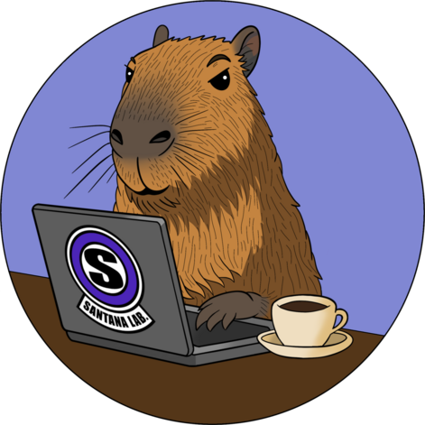

Segurança e Tecnologia
Santana Lab no YouTube
Como Criar seu Próprio Laboratório Hacker com Kali + OWASP Juice Shop
Kali Linux: Configurações Essenciais Antes de Começar a Usar!
Como Instalar o Kali Linux 2025.1 no VirtualBox no Linux [Fácil e Rápido]
Parcerias e contatos